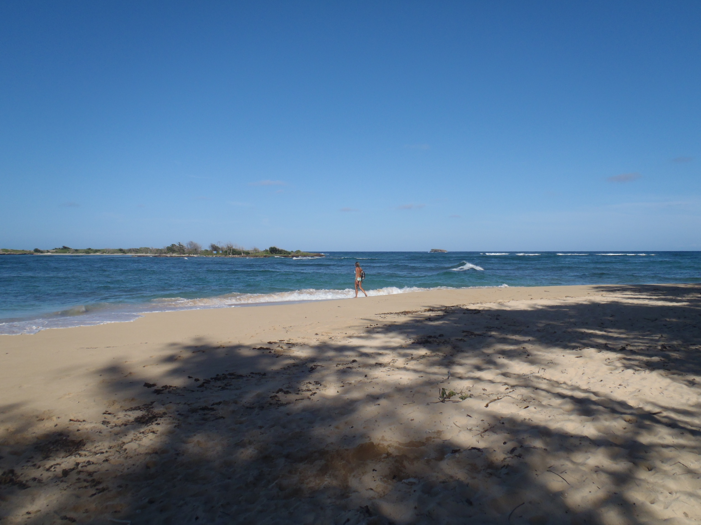
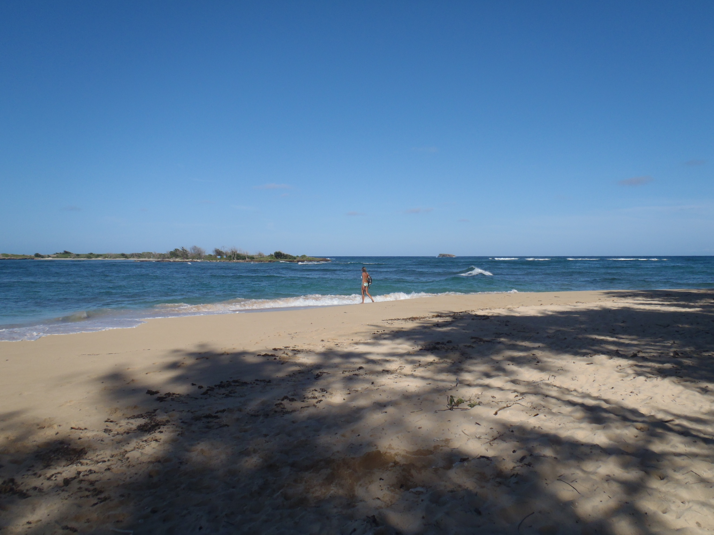

Dimanche 13 mars 2011
On est maintenant mouillé dans l'ouest de la zone de ski nautique, c'est très calme et très abrité... Qu'est-ce que c'est bien ! On a passé la meilleure nuit qu'on ait eu depuis bien longtemps !
Mardi 15 mars 2011
 Hier, on a fait les douanes, et aujourd'hui l'Agriculture. L'officier était un gars très propre.
Il a mis des gants pour regarder Corine nettoyer la glacière à l'eau de Javel. On est maintenant "domestic".
Hier, on a fait les douanes, et aujourd'hui l'Agriculture. L'officier était un gars très propre.
Il a mis des gants pour regarder Corine nettoyer la glacière à l'eau de Javel. On est maintenant "domestic".
On a aussi vu avec le harbormaster, ils nous ont trouvé un dock. Mais quel bordel. Je ne peux pas m'empècher de comparer avec la façon dont ça s'est passé à Tahiti...
À Tahiti (Yacht Club de Tahiti), le secrétaire est venu à notre rencontre dans son Boston, et nous a indiqué un coffre. Après l'avoir assuré, on est allé le rencontrer à terre. Il nous a dit en gros "Bienvenue à Tahiti, vous pouvez rester aussi longtemps que vous voulez, c'est 900 XPF par jour, vous paierez en partant voilà la clef des douches". Et c'était fait.
Ici on est allé voir à la capitainerie, après avoir mouillé à l'extérieur, pour voir si on pouvait avoir un permis pour accoster l'annexe. D'abord, on ne peut pas rester mouillé où on est, c'est contre le règlement (quel règlement, on nous a pas dit ; le Coast Pilot, Vol 7, dit que c'est un mouillage). Après, il a fallu inspecter le bateau. Pas de problème. La capitaine du port est venue pour l'inspection, elle a trouvé moyen de dire que notre cloche n'avait pas le bon diamètre (5 pouces au lieu des 8 pouces réglementaires). Ça prend tout son sens quand on sait que la cloche est un signal de brume, et que le nombre de jours de brouillard par an à Hawai'i peut aller jusqu'à atteindre zéro (les mauvaises années, bien sûr).
Ensuite - après avoir été certifiés conformes (on a promis de changer la cloche), on a pu commencer la paperasse. Ca a pris une demie-heure... Entre les copies, photocopies, signatures, coups de tampon, permis, autorisations...
Je ne sais pas quand on sera inspecté à nouveau. Mais 95% des bateaux qu'on peut voir ici sont des épaves ou des tas d'ordures (en dépit des efforts répétés du harbormaster pour que tout le monde ait une cloche réglementaire).
C'est pas grave ! On peut maintenant aller et venir comme on veut. Ça a juste pris cinq jours...
On peut aussi redécouvrir le pays de la liberté, avec ses "Keep Out", "Restricted access", "Violators will be prosecuted", "Forbidden access", "Government Property, Keep Out"... On avait oublié, ça fait bizarre...
Mardi 22 mars 2011
 On est allé voir le voilier aujourd'hui, avec les deux focs à réparer.
On est allé voir le voilier aujourd'hui, avec les deux focs à réparer.
Pour le yankee, c'est probablement parce que le fil a été endommagé par les ultra-violets. Pour la trinquette, c'est probablement parce qu'elle a l'âge du bateau... On attend un devis pour une nouvelle trinquette. C'était dans l'air, de toute façon...
La harbormaster (qui - ça se confirme - est décidément charmante) est venue nous dire qu'on ne pouvait pas plier la voile sur la pelouse. Il nous aurait probablement fallu un permis. Qu'elle aille se faire foutre.
 Sky et sa famille nous rendent visite. Il pousse comme un champignon !
Sky et sa famille nous rendent visite. Il pousse comme un champignon !
Voyez donc !
Mercredi 6 avril 2011
En plus, le chargeur de batteries - dont on ne s'est pas servi depuis San Francisco - est mort. On l'a remplacé par un plus petit (10 Amps), qui marche bien. Joe (un de nos voisins de ponton) nous laisse utiliser sa prise de courant, il est bien cool (à l'inverse de certains employés du port...).
Mercredi 13 avril 2011
Après avoir retourné le problème dans tous les sens, je pense qu'on va utiliser le réservoir du chauffage. On fera attention, et on utilisera des jerrycans pour avoir assez de fuel.
Maintenant je sais sur quoi je vais travailler quand on sera rentré.
 On va marcher à la pointe ouest d'O'Ahu (Kaena Point) - beaucoup d'oiseaux nichent là-bas, des puffins et des albatros

, au nord de Kane'ohe, probablement une des plus belles de l'île...
On va marcher à la pointe ouest d'O'Ahu (Kaena Point) - beaucoup d'oiseaux nichent là-bas, des puffins et des albatros

, au nord de Kane'ohe, probablement une des plus belles de l'île...
Il doit y avoir moyen de trouver un mouillage sur cette côte, elle est bien jolie. Ça nous changerait des citernes de Ke'ehi...